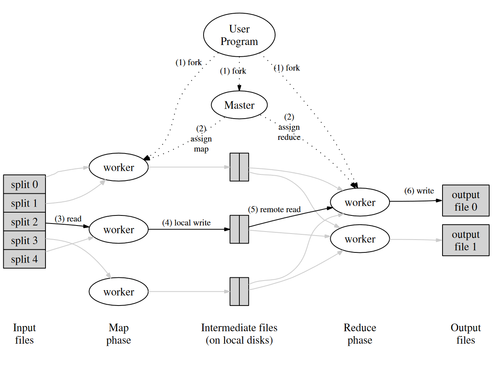
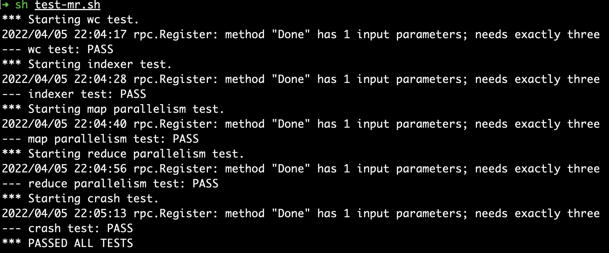

Lab 1需要我们实现一个简易版的MapReduce库，实现一个单机版的MapReduce(不同于论文中运行于集群)。需要完成的是mr/master.go，mr/worker.go和mr/rpc.go的相应部分。
MapReduce的原论文可以从这里获取。它的思想来源于函数式编程中的map和reduce过程，其主要流程如图所示：

系统由一个Master和多个Worker(map/reduce任务)组成，Master负责追踪当前的任务分配情况和Worker的状态，以及输入文件，中间文件以及输出文件的位置，以及负责任务的分配。Worker负责从Master处获取任务文件，进行处理，将输出的文件交给Master。在论文中，作者假定Worker是不可靠的，也就是说它可能在任何时间点crash down， 而Master的崩溃是小概率事件，而Master一旦崩溃，整个MapReduce任务也就没有必要进行下去了。因此，在我们接下来的工作中将只考虑Worker可能发生的崩溃的情况。
对于Map任务，Worker的工作是读取这个Input文件，然后将文件内容送入mapf函数，得到了一系列的K-V中间结果对，然后，对于这些K-V对，Worker将它们按照Key值取哈希，然后取模把它们映射到0 ~ nReduce-1 的范围内（$Hash(key) % nReduce$），然后按照映射值写入一系列相应的中间文件map-workerNo-Y，其中$Y \in [0, nReduce - 1]$。
至于Reduce任务，我们应当有nReduce个任务，对于每个Reduce任务 i, $i \in [0, nReduce - 1]$， Worker的工作是，读取map阶段所有产生的所有的中间文件map-X-i，将所有的K-V对存入数组，执行reduce过程。在存入数组后，之后的reduce过程就像lab中给出的mrsequential.go中的示例代码一样了：首先按照Key值排序，然后把Key值相同的K-V对放在一起，执行reducef，结果写入最终的输出文件。
Worker的工作还是比较简单的，主要的工作部分在于Master。Master需要同时给多个Worker分配任务，追踪这些任务的状态。当Master同时处理多个Worker的RPC请求时，便有可能出现一些典型的并发控制的问题了。一个直接的思路就是，给Master所保持的这些数据结构加上锁，这样确实行得通，但是就跟用其他语言实现毫无区别了。所以这里我们将要使用Golang的一大特性：Channel来完成。
在Master中，我们用一个Channel来装载待完成的任务，每个RPC请求到达的时候，相应的处理函数从Channel中取出一个任务，交给Worker执行。同时，我们再启动另一个Go协程，它负责扫描任务的状态，并将需要完成的任务送入这个Channel中。由于GO语言的Channel是天然并发安全的，所以我们可以通过这个过程，来保证Master能处理多个Worker的并发请求了。这个过程类似于生产者——消费者模型。
接下来，我们将以Map请求的处理过程为例说明思想。
首先，我们定义一个结构体类型用于存储每个输入文件的状态：
1 | type FileStatus struct { |
其中，isDone表示文件是否被处理完毕，isLaunched表示该文件的处理任务是否被发起，即，当Master将一个Input文件指派给一个Worker时，将其置为true。assignTime表示任务被指派出去的时间。assumedWorkerNo用于唯一标识Master期望由哪个Worker完成。在文件被指派给Worker时，Master生成一个唯一的WorkerNo编号给Worker，当任务被执行完成时，Worker将任务完成的消息连带输出文件名以及Worker自身的WorkerNo编号通过RPC请求发送给Master。之所以需要这个字段，是因为Worker可能出现各种故障，导致未能及时完成任务。在本次lab中，假设任务的超时时间为10s，如果超过了时间，即使后面任务完成的消息到达了，也应将其丢弃。
Master中，在初始化的过程中，我们创建一个inputFileStatusMap : map[string]FileStatus，为每一个Input文件创建一个这样的条目记录相关信息。
然后，我们定义三个Channel：mapWorkTodo mapWorkDoneMessage mapWorkTimeStamp，以及一个任务生产者协程。mapWorkTodo表示待完成的任务的队列，当一个Worker的请求分配工作消息到达时，Master从其中拿出一个需要完成的工作，将它分配给该Worker。同时，显然我们需要记录一下这个任务被分配给谁了，是什么时候分配出去的（以此判定任务是否超时，若超时，我们将其需要重新分配给其他的Worker），我们将这些信息用一个时间戳结构体保存，并放入mapWorkTimeStamp。此外，当一个Worker的任务完成的RPC到达的时候，我们简单地将其放入mapWorkDoneMessage这个Channel中。
对于任务生产者协程，它主要由一个无限for循环组成。在每个循环周期，它首先将mapWorkTimeStamp的所有时间戳取出，用这些时间戳更新inputFileStatusMap，然后，再从mapWorkDoneMessage取出所有的任务完成消息，只有当assumedWorkerNo符合任务完成的WorkerNo以及任务在限制时间内完成的话，任务才算成功完成，此时，将inputFileStatusMap的相应条目标记为已完成。然后，它扫描inputFileStatusMap所有的已超时的任务，将这些任务的所有指派信息清空（即assignTime = false assumedWorkerNo = -1 isLaunched = false）。最后，它再次扫描inputFileStatusMap，并将所有的待完成的任务放入mapWorkTodo队列中。当某次迭代中它发现所有任务均已经完成时，该协程的任务便已经完成了，接下来需要进行Reduce过程了，于是它将这些Channel关闭，开启Reduce过程中对应的协程，然后自己退出。
处理Worker的指派任务请求的RPC函数大致如下，其中Recude阶段与Map阶段所做的事情类似，篇幅缘故省略。
1 | // 处理Worker的指派任务请求的RPC函数 |
下面是任务生产者协程，其中每次迭代周期内其中的四个for循环所做的事情正如上面描述所讲。
1 | func (m *Master) mapWorkProducer() { |
可以看到，整个过程中，仅有一处地方用到了锁：
1 | mapWorkerIDLock.Lock() |
此处用到的锁的用途是产生一个唯一的WorkerID，所以需要对这个全局变量加锁。
以上就是Map阶段的大致实现。对于Reduce阶段来说，其思想基本上都是一样的，所以也不再多做解释了。而Worker的工作实质上是非常简单的：发送RPC请求，处理对应文件，将新的文件名发送给Master，没什么好讲的，所以也略去。运行一下评分脚本，通过了全部测试，nice~

注意：MIT在课程说明中，明确表示了请勿将答案上传到互联网中，所以，本文只是说明了完成该Lab的大致思路，以及只贴出了关键的几段代码。完整代码如果有感兴趣的，请发邮件与我联络：）